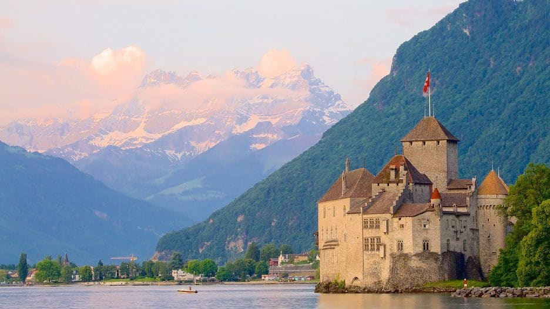

1. Matterhorn

O Matterhorn é uma das montanhas mais icônicas dos Alpes Suíços, localizada na fronteira com a Itália. É um destino popular para alpinistas e amantes da natureza.
2. Lago de Genebra
O Lago de Genebra é um dos maiores lagos da Europa Ocidental, cercado por belas cidades como Genebra e Montreux. É perfeito para passeios de barco e relaxamento.
3. Castelo de Chillon
Localizado às margens do Lago de Genebra, o Castelo de Chillon é uma fortaleza medieval bem preservada que oferece vistas incríveis e muita história.
4. Interlaken

Interlaken é uma cidade charmosa situada entre dois lagos, Thun e Brienz. É um ponto de partida para explorar os Alpes e praticar esportes de aventura.
5. Jungfraujoch
Conhecido como o "Topo da Europa", Jungfraujoch é uma estação de trem localizada a mais de 3.400 metros de altitude, com vistas espetaculares dos Alpes.
6. Zurique
Zurique é a maior cidade da Suíça, conhecida por sua mistura de modernidade e história. Oferece museus, restaurantes e uma vida cultural vibrante.